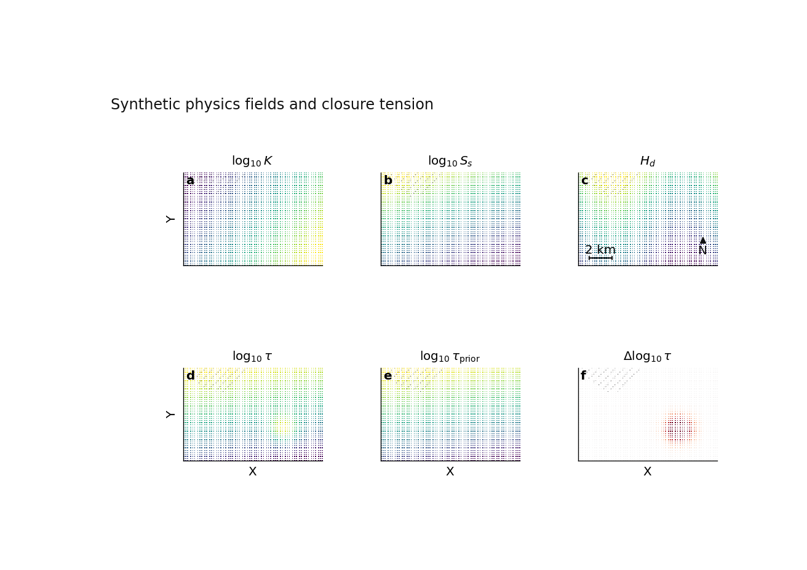

Note
Go to the end to download the full example code.
Physics fields: learning to read the physical story in a map#
This example teaches you how to read one of the most important diagnostic figures in GeoPrior-v3: the six-panel physics-fields map.
Instead of asking only, “Did the model predict well?”, this figure asks a deeper scientific question:
What kind of physical system did the model appear to learn, and where does that learned system agree or disagree with the prior physical closure?
The page is written as a guided lesson. We will:
build a compact synthetic physics payload,
render the six-panel figure,
measure the strongest tension zone,
interpret each panel like a scientific reader,
and finish with the equivalent command-line workflow.
What the six panels mean#
The plotting backend renders these spatial fields:
\(\log_{10} K\)
\(\log_{10} S_s\)
\(H_d\)
\(\log_{10} au\)
\(\log_{10} au_{\mathrm{prior}}\)
\(\Delta \log_{10} au\)
A good way to think about them is:
\(K\) tells you how easily water moves,
\(S_s\) tells you how compressible / storable the system is,
\(H_d\) gives an effective thickness or depth scale,
:math:` au` is the learned relaxation timescale,
:math:` au_{mathrm{prior}}` is the prior or closure-implied timescale,
and \(\Delta \log_{10} au\) is the “physics tension” panel, showing where the learned dynamics depart from the prior expectation.
Why this matters#
A model can be numerically good while still hiding an interesting physical inconsistency. This figure helps you move from forecasting to interpretation.
When you inspect these maps, you are not only looking for beautiful colors. You are looking for structure:
broad smooth gradients,
localized anomalies,
consistency between learned and prior timescales,
and zones where the inferred physics may deserve closer scrutiny.
This example uses a synthetic payload so the gallery page is fully executable during the documentation build.
Imports#
We import the real plotting backend from the existing plotting script. So this gallery page is not fake demo code: it teaches the user with the same rendering function that the project already uses for figure generation.
from __future__ import annotations
import tempfile
from pathlib import Path
import matplotlib.image as mpimg
import matplotlib.pyplot as plt
import numpy as np
from geoprior._scripts.plot_physics_fields import (
plot_physics_fields,
)
Step 1 - Build a compact synthetic study area#
We begin with a rectangular synthetic basin. The goal is not to imitate a real city perfectly, but to create a physically understandable example that teaches the reader how to inspect the figure.
We make three design choices on purpose:
K will vary mainly from west to east,
Ss will vary mainly from south to north,
Hd will vary smoothly with one oscillatory component.
Then we will create one localized anomaly in tau so the final Δlog10(tau) panel has a region worth discussing.
nx = 60
ny = 45
xv = np.linspace(0.0, 12_000.0, nx)
yv = np.linspace(0.0, 8_000.0, ny)
X, Y = np.meshgrid(xv, yv)
x = X.ravel()
y = Y.ravel()
# Normalized coordinates are convenient for writing smooth,
# interpretable synthetic fields.
xn = (X - X.min()) / (X.max() - X.min())
yn = (Y - Y.min()) / (Y.max() - Y.min())
Step 2 - Construct the physical fields#
Here we build the fields that the plotting backend expects.
Important idea: the backend will compute log10(K), log10(Ss), log10(tau), log10(tau_prior), and Δlog10(tau) internally when needed.
So the user mainly needs to provide physically meaningful arrays in a consistent payload.
# Hydraulic conductivity K [m s^-1]
K = 10.0 ** (-5.8 + 1.1 * xn - 0.5 * yn)
# Specific storage Ss [1/m]
Ss = 10.0 ** (-4.9 + 0.4 * yn - 0.2 * xn)
# Effective head depth Hd [m]
Hd = 18.0 + 8.0 * yn + 2.5 * np.sin(2.0 * np.pi * xn)
# Closure / prior relaxation time tau_prior [year]
tau_prior = 1.8 + 2.8 * yn + 0.6 * (1.0 - xn)
Step 3 - Add one localized anomaly#
This part is pedagogically useful. If every field were perfectly smooth and perfectly consistent, the final tension panel would not teach much.
So we create one compact “bump” that inflates the learned tau in a local region. This produces a clear zone where the learned timescale differs from the closure-implied timescale.
Step 4 - Optional censoring mask#
The plotting backend can also overlay hatched “censored” zones. Here we use a simple synthetic mask: the largest Hd values are marked. In real workflows, this could represent a domain where the field is clipped, censored, or otherwise flagged.
censored = (
Hd > np.quantile(Hd, 0.92)
).astype(float)
Step 5 - Assemble payload and metadata#
The backend expects the core fields in a dictionary-like payload. The units dictionary is not just decoration: it helps the figure remain scientifically legible.
Step 6 - Render the six-panel figure#
Now we call the real plotting function.
A few parameters are especially worth noticing:
render=”grid” gives a clean rasterized lesson figure,
clip_q controls percentile clipping for robust color limits,
delta_q controls the symmetric color scaling of Δlog10(tau),
scalebar and north_arrow make the map feel like a real spatial scientific figure.
The backend writes image files to disk. To make sure the figure is always visible on the gallery page, we reload the PNG and display it explicitly in a small matplotlib preview, just like the physics-sanity lesson.
tmp_dir = Path(
tempfile.mkdtemp(prefix="gp_sg_phys_")
)
out_base = str(
tmp_dir / "physics_fields_gallery"
)
out_paths = plot_physics_fields(
payload,
meta,
x=x,
y=y,
city="Synthetic Basin",
out=out_base,
agg="mean",
grid=140,
clip_q=(2.0, 98.0),
delta_q=98.0,
cmap="viridis",
cmap_div="RdBu_r",
coord_kind="xy",
dpi=160,
font=9,
render="grid",
hex_gridsize=90,
hex_mincnt=1,
cbar_label_mode="title",
cbar_labelpad=3.0,
cbar_tickpad=1.0,
show_legend=False,
show_labels=True,
show_ticklabels=False,
show_title=True,
show_panel_titles=True,
show_panel_labels=True,
hatch_censored=True,
title="Synthetic physics fields and closure tension",
out_json=None,
export_pdf=False,
boundary_segs=None,
boundary_style=None,
scalebar=True,
north_arrow=True,
scalebar_km=2.0,
)
print("Written files:")
for path in out_paths:
print(" -", path)
# The backend writes ``.png`` and ``.svg`` outputs. We load the PNG
# back into a small display figure so Sphinx-Gallery always has a
# visible rendered result on the page.
png_path = next(
Path(path)
for path in out_paths
if str(path).lower().endswith(".png")
)
img = mpimg.imread(png_path)
fig, ax = plt.subplots(figsize=(8.2, 5.8))
ax.imshow(img)
ax.axis("off")

Written files:
- C:\Users\Daniel\AppData\Local\Temp\gp_sg_phys_a84u4tda\physics_fields_gallery.png
- C:\Users\Daniel\AppData\Local\Temp\gp_sg_phys_a84u4tda\physics_fields_gallery.svg
(np.float64(-0.5), np.float64(1016.5), np.float64(650.5), np.float64(-0.5))
Step 7 - Locate the strongest physics-tension zone#
The last panel, Δlog10(tau), is often the most revealing one.
If this quantity is close to zero, the learned timescale is close to the prior or closure timescale.
If this quantity is strongly positive or negative, the model is saying: “the learned dynamics here do not fully agree with what the prior closure expected.”
We compute the largest absolute mismatch below.
delta_log_tau = np.log10(
tau.ravel()
) - np.log10(
tau_prior.ravel()
)
imax = int(
np.argmax(np.abs(delta_log_tau))
)
print("")
print("Largest |Δlog10(tau)| occurs near:")
print(f" x = {x[imax]:.0f} m")
print(f" y = {y[imax]:.0f} m")
print(
f" Δlog10(tau) = {delta_log_tau[imax]:.3f}"
)
Largest |Δlog10(tau)| occurs near:
x = 8542 m
y = 2727 m
Δlog10(tau) = 0.216
Step 8 - Read the panels like a scientist#
Let us now interpret the figure carefully.
Panel (a): log10(K)#
This panel shows how transmissive the system appears to be. Broad gradients usually suggest large-scale spatial structure. Sharp patches may indicate lithological contrast, artifacts, or localized learned behaviour.
Panel (b): log10(Ss)#
This panel describes storage / compressibility structure. If its spatial pattern is coherent and not excessively noisy, that is often a reassuring sign that the inferred field is not merely random texture.
Panel (c): Hd#
This panel is often easy to read physically because it stays in ordinary spatial units. It helps the reader connect the abstract latent fields to a more concrete physical thickness or depth scale.
Panel (d): log10(tau)#
This is the learned relaxation timescale. It tells you where the inferred system responds more quickly or more slowly.
Panel (e): log10(tau_prior)#
This is the prior or closure-implied timescale. It is not the final answer from the model; rather, it is the physically guided expectation that the learned field can agree with or deviate from.
Panel (f): Δlog10(tau)#
This is the key diagnostic. Regions near zero indicate broad agreement between learned and prior timescales. Strong positive or negative departures highlight “tension zones”.
In this synthetic example, the anomaly we inserted creates one compact region of elevated tension. In a real city-scale run, such a pattern might suggest:
a distinct hydrogeological compartment,
a place where the prior closure is too rigid,
a place where data push the learned solution away from the prior,
or a zone that deserves closer geological validation.
The important scientific lesson is this:
the last panel should not be read as “good” or “bad” in a simplistic way. It should be read as a map of where the learned dynamics and the assumed closure are most in conversation with one another.
Step 9 - Practical takeaway#
This figure is useful because it joins three levels of meaning:
spatial interpretation,
physical interpretation,
and model-diagnosis interpretation.
A reader who sees only forecast accuracy learns whether the model worked.
A reader who also sees the physics-fields panel learns why the model may have worked, where it is most physically coherent, and where it may be stretching away from the prior closure.
That is why this panel is much more than a publication figure: it is also a scientific debugging and interpretation tool.
Command-line version#
The same plotting backend can also be used outside the gallery from the command line.
The CLI accepts either:
--payload PATHfor a direct payload file, or--src DIRto auto-detect artifacts under a result folder.
It also supports:
--coord-kindwithauto,xy, orlonlat,--renderwithhexbinorgrid,clipping controls such as
--clip-qand--delta-q,optional boundary overlays,
scale bar and north arrow options,
and the usual plot text flags.
A typical direct run looks like this:
python -m scripts plot-physics-fields \
--payload results/example/physics_payload.npz \
--coords-npz results/example/coords.npz \
--city Nansha \
--coord-kind xy \
--render grid \
--grid 200 \
--clip-q 2 98 \
--delta-q 98 \
--cmap viridis \
--cmap-div RdBu_r \
--show-title true \
--show-panel-titles true \
--show-panel-labels true \
--scalebar true \
--north-arrow true \
--out fig_physics_maps
And if you want the modern CLI family, the dispatcher can call the same plotting command through the GeoPrior CLI registry.
The gallery page teaches the figure. The command line reproduces it in a real workflow.
Total running time of the script: (0 minutes 1.307 seconds)